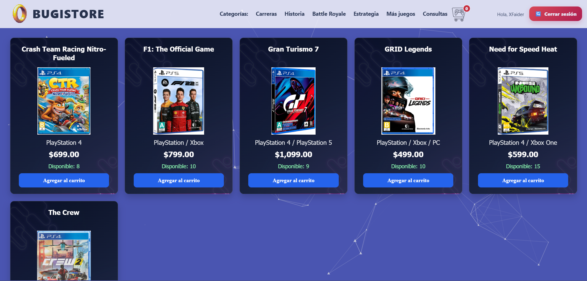
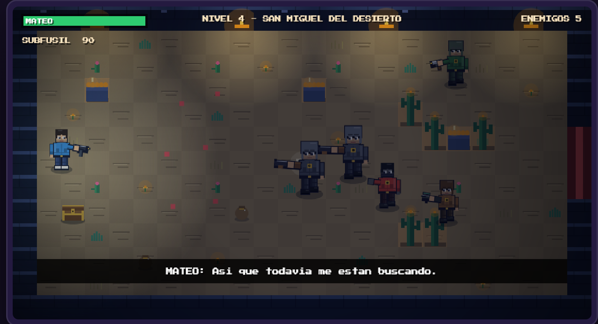
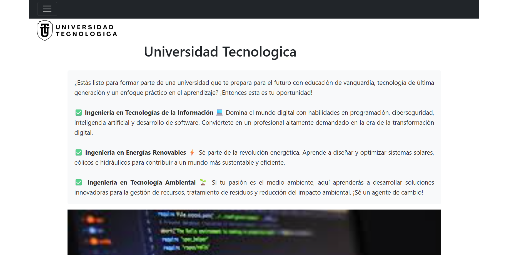

Desarrollo web
HTML5, CSS3, JavaScript y PHP.
Soy estudiante de Desarrollo y Gestión de Software, apasionada por la tecnología, el desarrollo web y la creación de soluciones digitales.
Soy Monica Osorio, estudiante de Desarrollo y Gestión de Software. Me interesa el desarrollo de aplicaciones web, la programación y las tecnologías emergentes.
Me considero una persona comprometida con el aprendizaje continuo, la resolución de problemas y el desarrollo de proyectos tecnológicos.
HTML5, CSS3, JavaScript y PHP.
MySQL y SQL Server.
Git, GitHub y Visual Studio Code.
Android Studio y App Inventor.

Desarrollo de una tienda virtual de videojuegos que permite consultar un catálogo de productos, gestionar un carrito de compras y simular pedidos. Cuenta con funcionalidades de una Progressive Web App.

Desarrollo de un videojuego que incluye diferentes niveles, exploración de escenarios, recolección de objetos y enfrentamientos contra enemigos. Cuenta con mecánicas de movimiento, combate y administración de recursos.

Desarrollo de una interfaz para una universidad ficticia, diseñada para gestionar el registro de alumnos y profesores, facilitando la organización y administración de la información académica.
¿Te interesa conocer más sobre mis proyectos o colaborar conmigo? ¡Contáctame!
Descargar CV